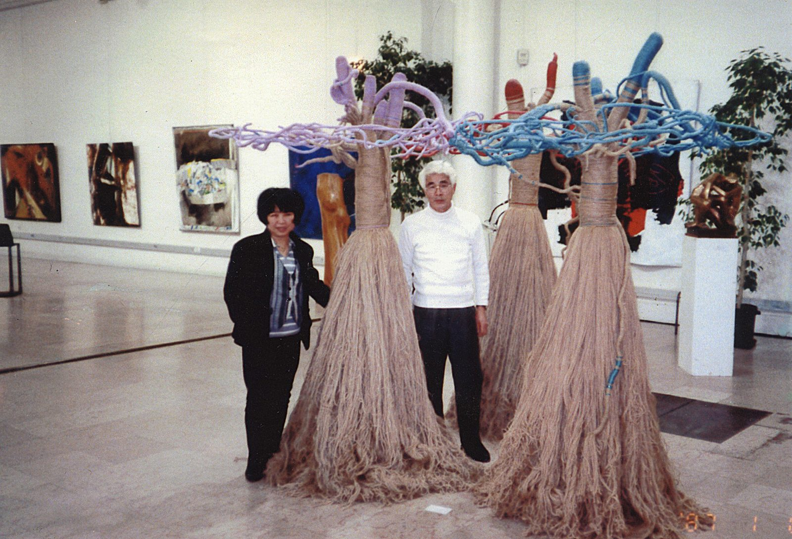
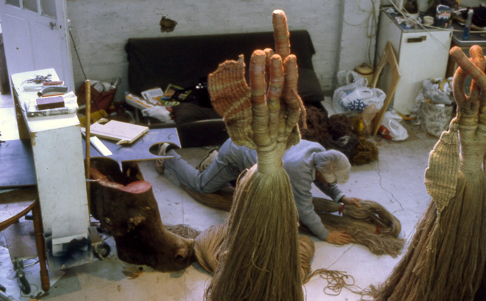
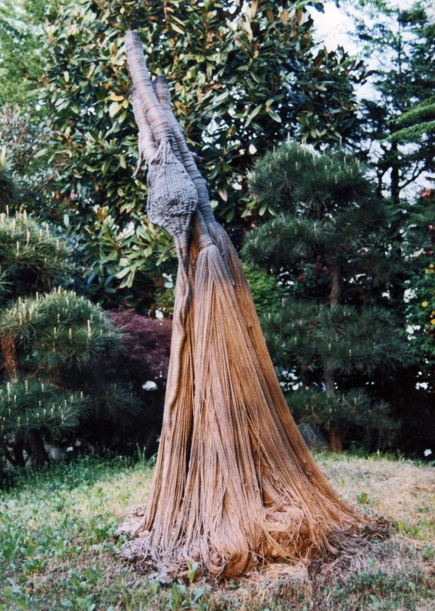
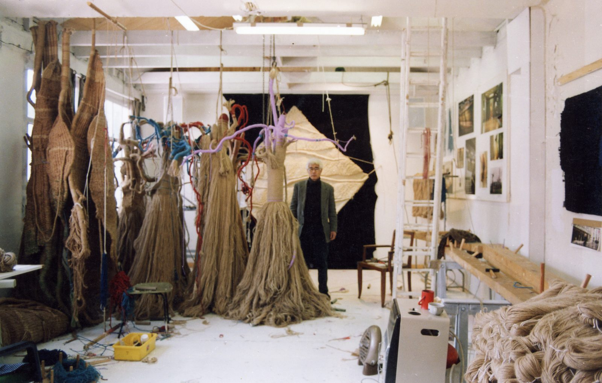
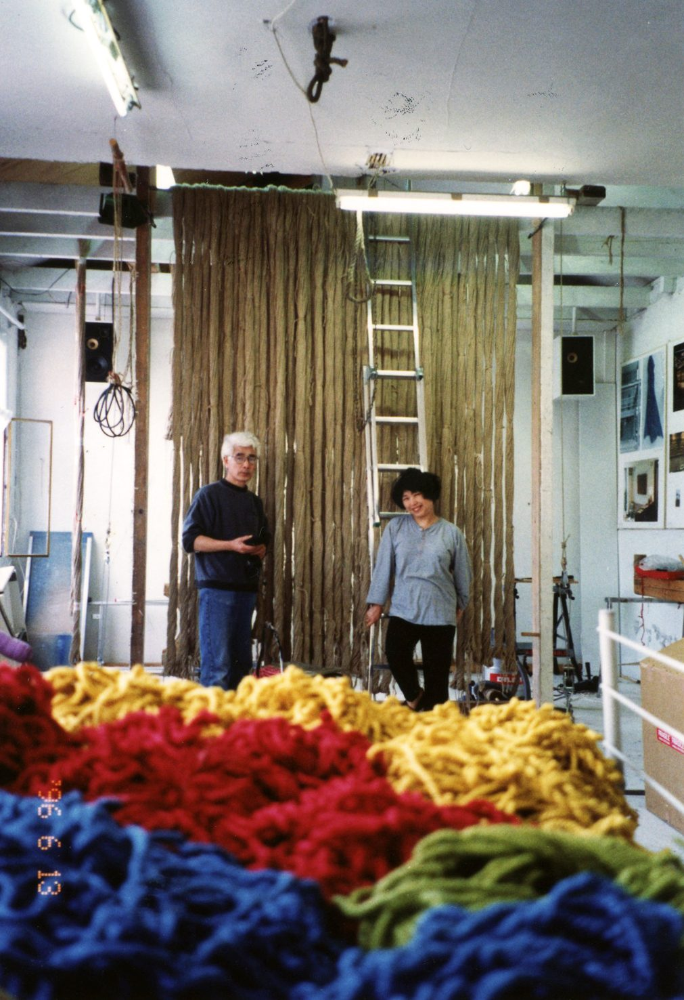
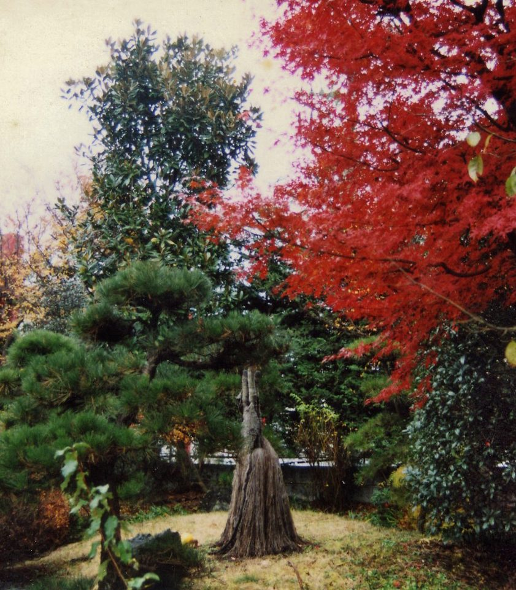
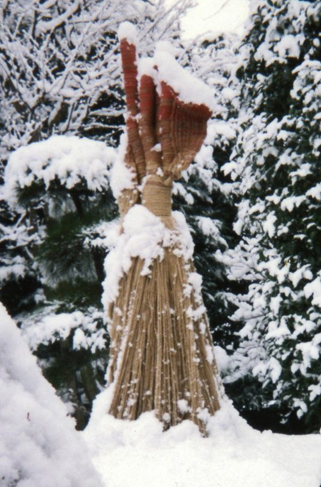

思い出のアルバム
Album Photo

1992 — Première Biennale Internationale de la Tapisserie Contemporaine, Beauvais, France
第一回ビエンナーレインターナショナル 現代タペストリー展 ボーヴェ、フランス 1992

1992 — Atelier rue Pierre Sémard
ピエールセマー通りのアトリエ 1992

1995–1998 — Observations sur la métamorphose d'une « Nymphe » dans le jardin de Akio Suzuki, son agent et galeriste
ギャラリーシエール、鈴木章夫氏の庭にて「ナンフ」自然の変化の観察記録、1995-1998

1996 — Atelier de Champigny

1996 — Avec Sumiko dans l'atelier de Champigny-sur-Marne
シャンピニーシュールマルンヌのアトリエ、功と栖子 1996

1995–1998 — Observations sur la métamorphose d'une « Nymphe » dans le jardin de Akio Suzuki, son agent et galeriste
ギャラリーシエール、鈴木章夫氏の庭にて「ナンフ」自然の変化の観察記録、1995-1998

1995–1998 — Observations sur la métamorphose d'une « Nymphe » dans le jardin de Akio Suzuki, son agent et galeriste
ギャラリーシエール、鈴木章夫氏の庭にて「ナンフ」自然の変化の観察記録、1995-1998
Album complet : 7 photos récupérées sur 7.